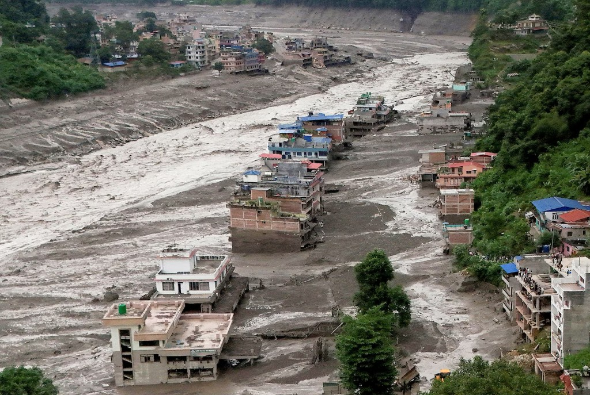

Territory first
We start with the systems and conditions surrounding the operation, not only the asset itself.
About us
Terranova Strategy is a territorial strategy consultancy. We help businesses and public organisations understand territorial exposure, navigate disruption, recover after major events, and take decisions on operational continuity.
Every operation depends on its territory. We read the conditions around a site — hazards, infrastructure, access, suppliers, workforce and clients — and translate them into decisions an organisation can act on.

Our mission
We turn territorial intelligence into decisions: from assessing exposure and protecting operational continuity to guiding strategic recovery. Climate resilience, territorial risk, supply chains, reconstruction and territorial development sit in one reading of place — not as separate products.
Our vision
Territory read as part of every operational and investment decision — so that organisations, and the places they depend on, adapt before disruption rather than after it.
Methodology
TEAM is our proprietary, in-house methodology. It reads a facility through the territory it depends on, and translates that exposure into a scored recommendation the organisation can defend: what to fund, what to defer, and what to act on now.
We build the territorial picture of the operation: the facility, its providers and warehouses, the transport lines and client delivery. Official hazard and physical climate information is overlaid on that whole network, not only on the plot.
A structured workshop with Operations together with Risk or Strategy weighs how critical each dependency is. TEAM then scores every dependency by what its failure would mean for the operation.
Each material dependency is assigned one of four management postures, matched to the nature of the business — a graded call on downtime, capital and continuity.
Our approach
Whether the question comes before disruption, during the event or after emergency works, we approach every situation the same way.
We start with the systems and conditions surrounding the operation, not only the asset itself.
Exposure is weighed with the people who run the operation, so the reading reflects how the business actually works.
Exposure is translated into operational and strategic consequences — including, where relevant, a comparison across locations.
From anticipating exposure to navigating disruption and shaping recovery, every stage is built to support a clear territorial decision.
What we do
The current offer covers before disruption, during the event, and after emergency works.

Before disruption: map territorial dependencies, score exposure, and decide what to fund, defer or act on.
Read more
During the event: time-to-reactivation, dual government and company tracks, and where capital should move now.
Read more
After emergency works: reconstruction sequenced for the permanent territorial reset.
Read moreWho we work with
Operators whose sites, corridors and suppliers sit in territories that can close — and who need to know what that means for continuity before, during and after disruption.
Authorities and institutions that have to sequence exposure, response and recovery for a territory, not only for a single facility.
We assess the hazards, dependencies and territorial conditions that can affect your operations — giving you the clarity to navigate disruption and take strategic decisions.
Start a conversation